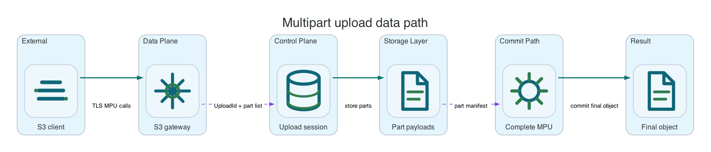

Multipart Upload
Use multipart for large objects or clients that need resumable writes. Li9 S3 supports multipart creation, part upload, completion, read-back, abort, and recovery after runtime restarts.
Common AWS CLI setup
Run this once for the target bucket. Replace li9-s3-runtime and app-data with your namespace and S3Bucket resource name.
export NS=li9-s3-runtime
export BUCKET_CR=app-data
export BUCKET="$(oc -n "$NS" get s3bucket "$BUCKET_CR" -o jsonpath='{.status.bucketName}')"
export SECRET="$(oc -n "$NS" get s3bucket "$BUCKET_CR" -o jsonpath='{.status.secretName}')"
export ENDPOINT="$(oc -n "$NS" get secret "$SECRET" -o jsonpath='{.data.AWS_ENDPOINT_URL}' | base64 -d)"
export AWS_ACCESS_KEY_ID="$(oc -n "$NS" get secret "$SECRET" -o jsonpath='{.data.AWS_ACCESS_KEY_ID}' | base64 -d)"
export AWS_SECRET_ACCESS_KEY="$(oc -n "$NS" get secret "$SECRET" -o jsonpath='{.data.AWS_SECRET_ACCESS_KEY}' | base64 -d)"
export AWS_REGION="$(oc -n "$NS" get secret "$SECRET" -o jsonpath='{.data.AWS_REGION}' 2>/dev/null | base64 -d || true)"
export AWS_REGION="${AWS_REGION:-us-east-1}"
export AWS_EC2_METADATA_DISABLED=true
li9s3() {
aws --endpoint-url "$ENDPOINT" --region "$AWS_REGION" --no-verify-ssl s3api "$@"
}To verify the setup, run:
li9s3 head-bucket --bucket "$BUCKET"
li9s3 list-objects-v2 --bucket "$BUCKET" --max-keys 1Multipart Upload
Use multipart for large objects, streaming clients, or workloads that need resumable writes. Li9 S3 tracks multipart state in the metadata plane and keeps incomplete uploads invisible until CompleteMultipartUpload commits the final object. Part listing, upload listing, abort, checksum-aware completion, and copy-part flows follow S3 client expectations.

| Concern | Behavior | Admin Note |
|---|---|---|
| Visibility | Uploaded parts are not visible as an object until completion. | Failed writes should not leak partial objects to readers. |
| Cleanup | Incomplete uploads can be aborted manually or by lifecycle rules. | Use lifecycle AbortIncompleteMultipartUpload for long-running buckets. |
| Pagination | List multipart uploads and parts obey S3 response limits and continuation semantics. | SDK paginators can be used normally. |
| Checksums | Checksum-enabled multipart upload validates part and composite checksums. | Use checksum mode for backup and migration validation. |
dd if=/dev/zero of=/tmp/li9-multipart.bin bs=1M count=8 status=none
UPLOAD_ID="$(li9s3 create-multipart-upload --bucket "$BUCKET" --key smoke/multipart.bin --query UploadId --output text)"
ETAG="$(li9s3 upload-part --bucket "$BUCKET" --key smoke/multipart.bin --part-number 1 --body /tmp/li9-multipart.bin --upload-id "$UPLOAD_ID" --query ETag --output text)"
li9s3 complete-multipart-upload \
--bucket "$BUCKET" \
--key smoke/multipart.bin \
--upload-id "$UPLOAD_ID" \
--multipart-upload "{\"Parts\":[{\"ETag\":${ETAG},\"PartNumber\":1}]}"
li9s3 head-object --bucket "$BUCKET" --key smoke/multipart.binAbort And Lifecycle Cleanup
When an application fails after uploading parts, abort the upload or let lifecycle cleanup remove stale state. Lifecycle cleanup is safer for shared buckets because it consistently applies the same age threshold to all incomplete uploads.
STALE_UPLOAD_ID="$(li9s3 create-multipart-upload --bucket "$BUCKET" --key smoke/stale.bin --query UploadId --output text)"
li9s3 list-multipart-uploads --bucket "$BUCKET" --prefix smoke/
li9s3 abort-multipart-upload --bucket "$BUCKET" --key smoke/stale.bin --upload-id "$STALE_UPLOAD_ID"
li9s3 list-multipart-uploads --bucket "$BUCKET" --prefix smoke/